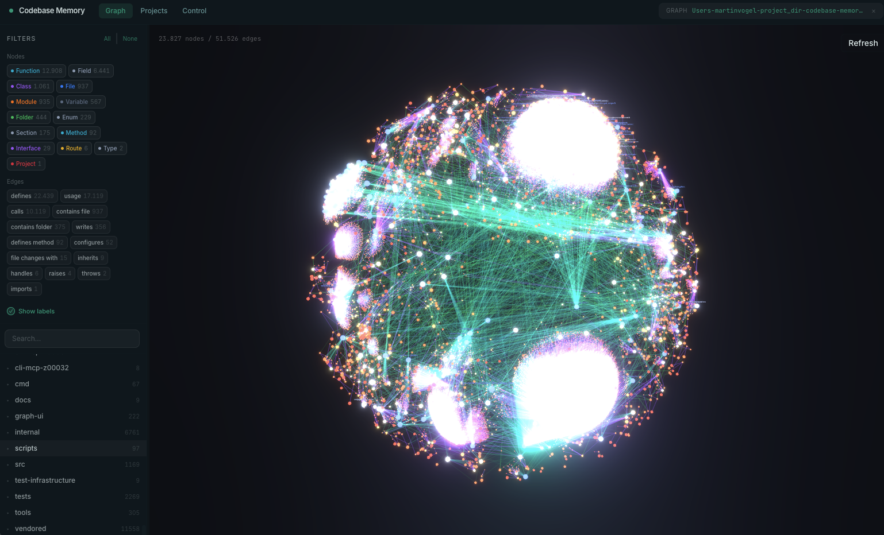

memory-for-ai
by LonelyTraderBay
An MCP server that turns your codebase into a persistent knowledge graph — functions, call chains, HTTP routes, cross-service links — so your AI coding agent answers structural questions with graph queries instead of reading file after file. One native executable, fully local.

Built-in 3D graph visualization — explore your knowledge graph at localhost:9749.
What is memory-for-ai?
An open-source Model Context Protocol (MCP) server that indexes a codebase into a persistent knowledge graph of functions, classes, call chains, HTTP routes, and cross-service links. Instead of grep-then-read cycles, the agent runs one graph query: complete caller trees, blast radius, architecture overviews, dead code, complexity hotspots.
It is a structural-analysis backend, not a chatbot: no embedded LLM, no API key, no telemetry. Your MCP client is the intelligence layer; memory-for-ai is its memory. All processing happens locally — your code never leaves your machine. The graph persists across sessions in SQLite, and a background watcher keeps it fresh on Git or filesystem changes.
Install
One command downloads the verified release for your platform, checks its SHA-256, installs the binary, and configures every coding agent it detects. Then restart your agent and say "Index this project".
curl -fsSL https://raw.githubusercontent.com/LonelyTraderBay/memory-for-ai/main/install.sh | bash
# Windows (PowerShell)
Invoke-WebRequest -Uri https://raw.githubusercontent.com/LonelyTraderBay/memory-for-ai/main/install.ps1 -OutFile install.ps1
Unblock-File .\install.ps1; .\install.ps1
Also available via npm, PyPI, Homebrew, Scoop, Winget, Chocolatey, AUR, Nix, and go install.
Options: --skip-config (binary only), --dir, --clients,
--project (below). Preview exactly what would be written on your machine with
memory-for-ai install --dry-run. Full reference:
docs/INSTALL.md.
One project, one fenced server
Run the installer with --project from a repository root and that repository gets its
own MCP server named memory-for-ai-<repo>, pinned with --scope so
no other project's graph is visible or reachable — with zero changes to global agent config:
For AI agents
The documentation is written for the agent that will actually use the tool. The agent operating guide covers the mental model, every tool's exact semantics, task→tool playbooks, the correctness protocol for negative claims, per-project tuning, and failure modes. llms.txt is the machine-readable index.
The 18 MCP tools — index_repository, search_graph, trace_path, query_graph, check_index_coverage, detect_changes, get_architecture, get_code_snippet, and 10 more — cover discovery, impact analysis, architecture, coverage verification, decision memory (ADR), and runtime-trace evidence. Every tool also runs as a one-shot CLI command.
Measuring real effectiveness
Don't take the 120x on faith — measure it on your own repository. The measuring guide gives you a 15-minute spot check (one real question, graph vs. file-by-file, exact commands and formulas), the tool's built-in measurement surfaces, and a rigorous A/B protocol for decision-grade numbers.
Reference points: five structural queries ~3,400 tokens via the graph vs ~412,000 file-by-file; a maintainer dogfood run answered "who calls X" (66 callers, complete) in ~250 tokens where the grep equivalent meant reading ~33,000 tokens and still missed indirect callers. The guide also counts the honest costs — the fixed per-session tool-list overhead — so short sessions are evaluated fairly.
Documentation
Agent operating guide
Mental model, all 18 tools with exact semantics, task→tool playbooks, correctness protocol, per-project tuning, CI/containers, failure modes.
docs/AGENT_GUIDE.mdInstallation reference
Every install path: one-liners, per-project mode, package managers, containers/CI, update, uninstall, build from source, artifact verification.
docs/INSTALL.mdConfiguration reference
Config files, runtime settings, environment variables, scoped sessions, daemon rendezvous.
docs/CONFIGURATION.mdMeasuring real effectiveness
15-minute spot check, built-in measurement surfaces, rigorous A/B protocol with formulas and a reporting schema.
docs/MEASURING.mdFAQ
How does it reduce token usage?
Agents explore code through repeated grep-then-read cycles. The same structural questions are answered from a precomputed graph: in a five-query measurement, ~3,400 tokens via the graph vs ~412,000 file-by-file. Measure it yourself with the guide above.
Can I trust the graph to be complete?
The tool reports its own gaps: skipped files, parse-error line ranges, a coverage ratio, and
machine-readable confidence reasons. The agent guide's correctness protocol requires checking
check_index_coverage before negative claims like "nothing calls this function".
Which AI coding agents does it configure?
45 automatic/conditional client surfaces — Claude Code, Codex CLI, Gemini CLI, Zed, OpenCode,
Cursor, VS Code, Windsurf, Kiro, Qwen Code, GitHub Copilot CLI, and about 34 more. Only documented
MCP entries, instructions, skills, and hooks are written; no experimental flags or permission
bypasses. Preview with memory-for-ai install --dry-run.
Does it send my code anywhere?
No. All indexing and querying are local; there is no embedded LLM, no API key, no telemetry, and the binary makes no network request of its own accord. Every release executable is VirusTotal-scanned before publication and ships with its SHA-256 unchanged.
What is Hybrid LSP?
A lightweight C implementation of language type-resolution algorithms (inspired by tsserver, pyright, gopls, Roslyn, rust-analyzer) embedded in the binary. It refines call edges beyond tree-sitter syntax — imports, generics, inheritance, JSX dispatch — with no language-server process and no per-project setup, for Python, TypeScript/JavaScript, PHP, C#, Go, C/C++, Java, Kotlin, Rust, and Perl.